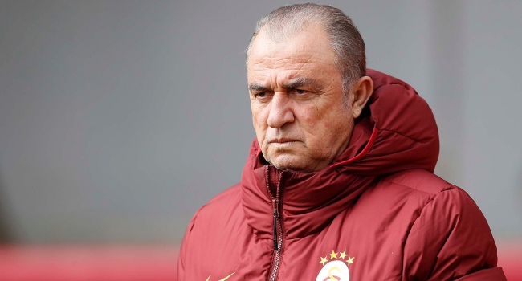
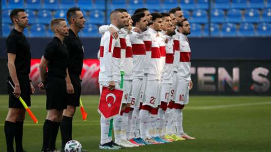
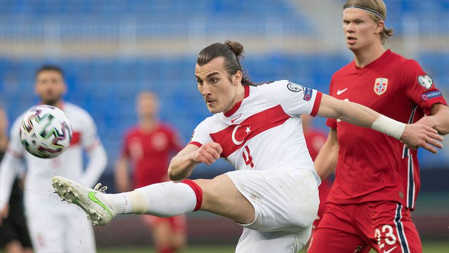

Haberler
BU BİR ŞAMPİYONLUK HİKAYESİ!Fatih Terim’den muhteşem konuşma!Bugün 17 Mayıs 2020. Bundan tam 20 sene önce bugün, Galatasaray Türkiye'de eşi benzeri görülmemiş bir başarıya imza atarak UEFA kupasını kazanıp Avrupa'nın en büyüğü olmuştu. Galatasaray'a, Arsenal karşısında oynayacağı finalde kimse şans vermezken, sarı kırmızılılar kimilerine göre bir mucizeye imza atarak İngiliz devini mağlup etmişti. Ama bu bir mucize değildi. Bu inananların zaferiydi ve o inanç Fatih Terim'in unutulmaz soyunma odası konuşmasında gizliydi. İşte o motivasyon konuşması! Galatasaray'ın, Danimarka'nın Kopenhag şehrinde 17 Mayıs 2000 tarihindeki final maçında İngiltere'nin Arsenal takımını penaltı atışları sonucunda mağlup ederek, UEFA Kupası'nı kazanmasının üzerinden tam 20 sene geçti. 
Bu şampiyonluk bir Türk takımının Avrupa'da elde ettiği en büyük başarı olarak hala tarihteki yerini koruyor. Galatasaray kulbü ve taraftarları sosyal medyada bir çok videoyla bu kupanın 20. yıldönümünü kutlarken, Fatih Terim'in efsane soyunma odası konuşması ise tekrar kulaklarda yankılandı. Fatih Terim 17 Mayıs akşamı maçtan hemen önce öğrencilerine, "Yine Söylüyorum: Kazanacaksınız. Kazanmak İçin Uğraşacaksınız. Ama Netice Ne Olursa Olsun, Siz Benim Gönlümde Hep Kazandınız, Hep Şampiyonsunuz ve Öyle Kalacaksınız. Allah Yardımcınız Olsun." diyerek o kupayı buraya getirten konuşmayı yapmıştı. |
Son Dakika
 Cristiano Ronaldo'nun yere attığı kaptanlık pazubandı yaklaşık 64 bin euroya satıldı.  PSG oyuncusu Veratti corona virüse yakalandı.  Yusuf Yazıcı, corona virüse yakalandı.  Erol Bulut ilk kez konuştu: "Böyle beklemiyordum"  Levent Şahin: İzahı olmayan bir gece  Guardiola yeni forvet peşinde! |
|
Milli Takım
AVRUPAYI KORKU SARDI: BİZİM ÇOCUKLAR ŞAKA YAPMIYOR!2022 FIFA Dünya Kupası Avrupa Elemeleri G Grubu'nda Türkiye'nin deplasmanda Norveç'i 3-0 yendiği karşılaşma Avrupa basınında da geniş yer buldu. "Bundan daha kara gece olamaz" Norveç'in yüksek tirajlı gazetesi VG, "Bundan daha kara gece olamaz" başlığıyla paylaştığı haberde, Norveç Teknik Direktörü Stale Solbakken'nin gruptaki ilk ciddi sınavını geçemediğini ve bu skorun "kabusun başlangıcı" olduğunu ifade etti.Haberde, Norveçli futbolcuların son dönemde parlayan yıldızını Türkiye'nin söndürdüğü kaydedilirken, yıldız oyuncu Erling Haaland'ın maçtaki performansıyla geçerli not alamadığı vurgulandı. "Türkiye karşısında hayal kırıklığı" Bir diğer gazete Aftenposten ise, "Türkiye karşısında hayal kırıklığı" manşetini atarak, Türkiye'nin kontrataklarla Norveç savunmasını "paramparça ettiğini" yazdı.Devlet televizyonunda da gündem Norveç - Türkiye karşılaşmasıydı. NRK kanalı "Norveç'e gerçek bir ders" başlığını kullandığı haberde, Haaland'ın agresif Türk savunması arasında çok zorlandığına dikkati çekti. |
Haberler
Cristiano Ronaldo'nun yere attığı kaptanlık pazubandı yaklaşık 64 bin euroya satıldı. PSG oyuncusu Veratti corona virüse yakalandı. Yusuf Yazıcı, corona virüse yakalandı. Erol Bulut ilk kez konuştu: "Böyle beklemiyordum" Levent Şahin: İzahı olmayan bir gece Guardiola yeni forvet peşinde! |
|
 |
||